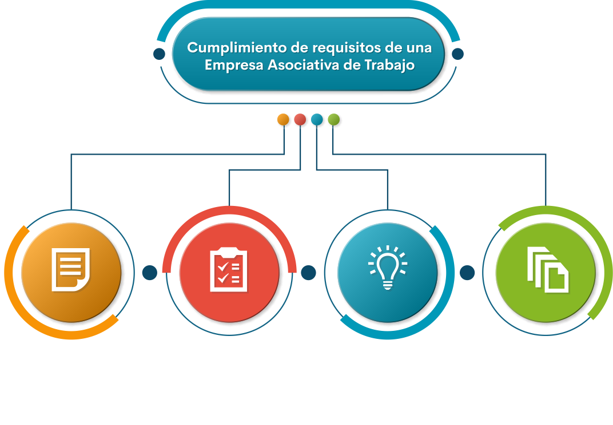

Introducción
Con este componente formativo se pretende que el aprendiz conozca los pasos y requisitos que se exigen desde la ley para que se constituyan y legalicen las EAT, además, de las organizaciones de apoyo al emprendimiento, redes de asociatividad y los aportantes de capital semilla para las nuevas unidades de negocio.
De igual manera, la importancia de establecer o diseñar un plan de negocio o de empresa con los estudios necesarios: de mercados, organizacional, técnico o de producción y, finalmente, el estudio financiero para conocer la inversión inicial.
1. Cumplimiento de requisitos de una EAT

Diseño acta de constitución y establecimiento de estatutos de la EAT
En el acta de constitución se establecen los asociados gestores de la EAT y los estatutos, especificando los nombres de los miembros de la junta con sus funciones, como el director general, secretaria, tesorero, órgano de control social y demás asignaciones que requiera la EAT. También se tendrá en cuenta, durante su diseño, los aportes y las demás exigencias que adopte la junta de asociados de la EAT.
En el acta de constitución se determina quién será el representante legal de la EAT, el cual se encargará inicialmente de solicitar la personería jurídica ante Cámara de Comercio y hará las demás presentaciones ante los órganos como el Ministerio de Trabajo y Protección Social.
Si requiere realizar el diseño de acta de constitución, para organizarlo de acuerdo con su necesidad y tener una orientación general al respecto, puede descargar el “Modelo acta de constitución” si así lo desea, y navegar en la web para un formato con la estructura que mejor requiera.
Anexo. Modelo acta de constitución EAT
Pasos para legalizar la EAT
De acuerdo a la actividad comercial y tipo de EAT se requiere presentar ante una notaría o juez el acta de constitución, Cámara de Comercio, DIAN, Ministerio de Trabajo y demás instituciones que se requieran.
En algunos casos, dada la actividad económica de la EAT, se precisa completar algunas condiciones en instituciones como la Secretaría de Salud, bomberos, Invima, Industria y Comercio, Secretaría de Medio Ambiente, entre otras, para que el proceso de legalización sea satisfactorio.
Identificación de las ideas de negocio
Una manera efectiva puede ser una lluvia de ideas, de acuerdo con los perfiles de los miembros de la futura EAT y conforme al formato propuesto denominado “Lluvia de ideas”, puede descargarlo y establecer planes de empresa orientados a dar soluciones a las necesidades percibidas en su entorno.
Por otro lado, una de las herramientas para asegurar la financiación de la EAT propuesta por el equipo, es el plan de negocios; puede descargar la presentación y el archivo denominado “Plan de negocios” donde se mostrará qué hacer para que el negocio no fracase.
Estudios
En la realización de los requisitos para la consolidación de una empresa se deben tener presente los estudios previos, por lo cual se refieren algunos de ellos:
- Estudio de mercados: se refiere a establecer quiénes serán los clientes potenciales de la EAT, su ubicación y formas de pago.
- Estudio organizacional: consiste en establecer la carta estratégica de la EAT con la misión, visión, objetivos, metas, estrategias, valores y principios de la EAT.
- Estudio técnico: se refiere a la forma de elaboración del producto o la prestación del servicio, los procesos y procedimientos.
- Estudio financiero: se trata de calcular la inversión inicial y establecer aportes de cada uno de los asociados, las fuentes externas de apoyo financiero y capital semilla.
2. Documentos requeridos para la constitución de una Empresa Asociativa de Trabajo
En la formalización de la EAT es primordial consultar la homonimia ante Cámara de Comercio, enseguida se solicitará la personería jurídica, el RUT en la DIAN, la escritura o acta de constitución para las firmas en la notaría, entidades de salud, Invima, banco para cuenta corriente o de ahorros, y demás que sean necesarias de acuerdo con su actividad económica.
Es ideal diligenciar los documentos exigidos por las entidades reguladoras, entre las cuales se destacan:
- Notaría
- Cámara de comercio
- DIAN
- Ministerio de Trabajo
- Seguridad Social
- Otros (de acuerdo a la actividad económica):
- Invima
- Secretaria de Salud
- Bomberos
- Ministerio de Medio Ambiente
- Banco apertura de cuenta de ahorros o cuenta corriente.
Glosario
Asociatividad: es el vínculo que se establece con la reunión, agrupación o asociación de varias personas que buscan un fin común, bajo principios de solidaridad, responsabilidad, ética, adhesión libre y voluntaria, y democracia.
Economía: sistema de producción, comercialización, distribución, intercambio de bienes y servicios que buscan satisfacer las necesidades de una población, familia e individuos.
Economía naranja: es el desarrollo por medio de la diversidad cultural y la creatividad que se promueven en las comunidades que buscan transformar los entornos sociales, y generar crecimiento económico de los países.
Emprendimiento: es el proceso mediante el cual los individuos, a través de la generación de ideas creativas e innovadoras, buscan desarrollar unidades productivas que satisfagan necesidades o solucionen problemas en las sociedades.
Homonimia: consiste en validar si existen o no, otras empresas o establecimientos a nivel nacional con el mismo calificativo de la sociedad que se va a establecer.
Invima: es el Instituto Nacional de Vigilancia de Medicamentos y Alimentos, es una entidad de vigilancia y control técnico científico.
Plan de negocio: bloque de información, expresada en un documento, que evidencia un pensamiento estratégico de la empresa y sus negocios, susceptible de ser comprendida por propios y extraños.
Requisitos: elementos o condiciones que se deben reunir y seguir para obtener un beneficio o resultado después de una serie de actividades.
Material complementario
| Nombre del documento o material | Tipo de material | Enlace del recurso |
|---|---|---|
| Cámara de Comercio de Bogotá. (2020). ¿Cómo constituir y matricular una Empresa Asociativa de Trabajo (EAT)? | Web | Ver |
| Cámara de Comercio de Bogotá. (2016). Consejos para formalizar su empresa. | Video | Ver |
| Cámara de Comercio de Bogotá. (2016). Formalización Empresarial CCB. | Video | Ver |
Referencias bibliográficas
Méndez, H., Leyva, L., Rojas, Y., y Servicio Nacional de Aprendizaje. (1995). Manual para la organización de empresas asociativas de trabajo. Servicio Nacional de Aprendizaje (SENA).https://sena-primo.hosted.exlibrisgroup.com/permalink/f/1j5choe/sena_dspace11404/4108
Palacio, B. (2008). Guía nacional y regional de emprendimiento (No. DC-0233). República de Colombia. Ministerio de la Protección Social.
Pinzón, M., Ortiz, O., Vargas, T., Giraldo, C., Leiva, L. y Ramírez, A. (1995). Conformación de Empresas Asociativas de Trabajo. Servicio Nacional de Aprendizaje (SENA). https://repositorio.sena.edu.co/bitstream/11404/4383/1/conformacion_empresas_asociativas_trabajo.PDF
Ramírez, C., Chaves, J. y Leiva, L. Guía Metodológica para Promoción, Establecimiento y Consolidación de Empresas Asociativas. (1990). Servicio Nacional de Aprendizaje (SENA).https://repositorio.sena.edu.co/bitstream/11404/4795/1/ guia_metodologica_promocion_establecimient_consolidacion_empresas_asociativas.pdf
Fotografías y vectores tomados de https://www.shutterstock.com/ y https://www.freepik.es/
Licencia Creative Commons
CC BY-NC-SA
Ver licencia.